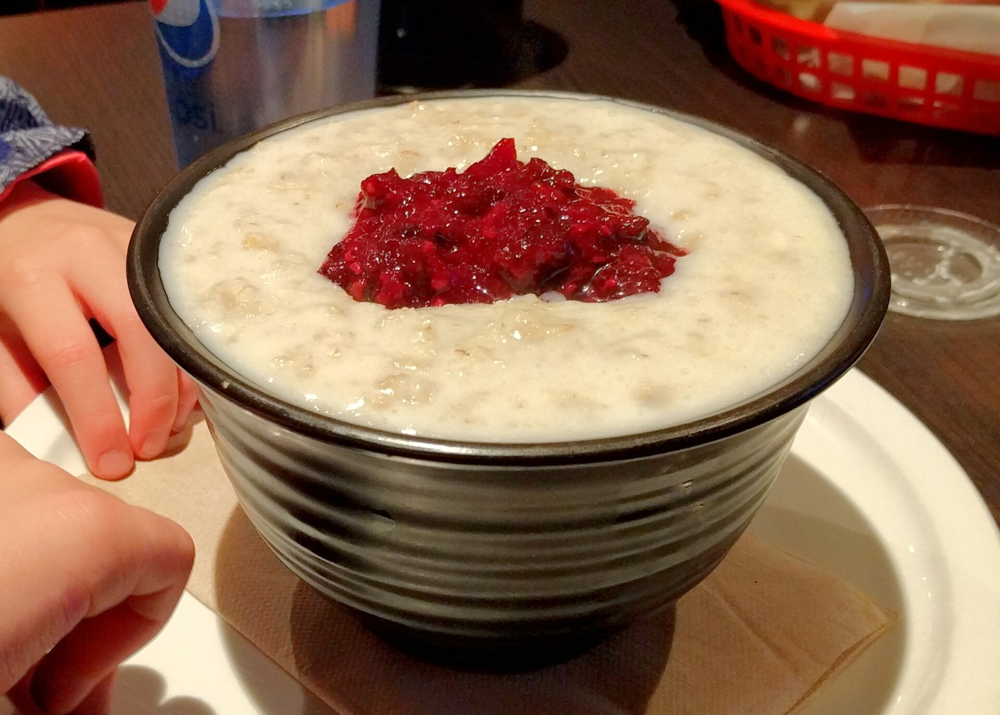

Draft only · noindex,nofollow · PL/EN · P1/P2 remediated
Owsianka przy wysokim cholesterolu
Lead PL: Owsianka przy wysokim cholesterolu: owsianka jako praktyczne źródło błonnika rozpuszczalnego, a nie magiczne lekarstwo na cholesterol. Ten szkic ma pomóc czytelnikowi podjąć kilka małych decyzji w zwykłym tygodniu, bez obietnic leczenia, bez straszenia i bez planu, którego nie da się utrzymać przy pracy, rodzinie albo podróży.

Najważniejsze wnioski
- Najpierw nazwij sytuację: owsianka jako praktyczny sposób na więcej błonnika rozpuszczalnego i lepszą jakość śniadania.
- Pierwszy krok to: zacznij od porcji płatków owsianych kilka razy w tygodniu i połącz ją z owocem, orzechami oraz produktem białkowym.
- W praktyce oprzyj posiłki o: płatki owsiane górskie, otręby owsiane, jabłko, owoce jagodowe, jogurt naturalny, kefir, siemię lub orzechy.
- Nie idź w skrót: błędem jest dosładzanie owsianki tak mocno, że znika przewaga nad słodkimi płatkami.
Sedno sprawy
Owsianka przy wysokim cholesterolu dotyczy przede wszystkim sytuacji: owsianka jako praktyczny sposób na więcej błonnika rozpuszczalnego i lepszą jakość śniadania. Najlepszy punkt wyjścia to zwykły tydzień, w którym da się powtórzyć podobne posiłki i zauważyć, co naprawdę pomaga. Artykuł nie ustawia jednej idealnej diety; porządkuje decyzje, które mają największą szansę być wykonane.
Pierwsze obserwacje
Pierwszy krok: zacznij od porcji płatków owsianych kilka razy w tygodniu i połącz ją z owocem, orzechami oraz produktem białkowym. Dzięki temu zmiana jest mierzalna i nie zamienia się w chaotyczne usuwanie produktów. Jeśli po kilku dniach nie da się jej utrzymać, warto uprościć warunki, a nie dokładać kolejne zakazy.
Kompozycja posiłku
W praktyce przydadzą się: płatki owsiane górskie, otręby owsiane, jabłko, owoce jagodowe, jogurt naturalny, kefir, siemię lub orzechy. Taki zestaw daje punkt zaczepienia w sklepie i w kuchni. Nie każdy element musi pojawić się codziennie; ważniejsze jest, żeby posiłek miał funkcję: sycić, ułatwiać regularność albo zmniejszać liczbę przypadkowych decyzji.
Wariant awaryjny
Przy zakupach warto wybrać dwie wersje: domową i awaryjną. Domowa może być tańsza i bardziej powtarzalna, awaryjna ma ratować dzień, kiedy plan się rozsypuje. Wtedy czytelnik nie musi wybierać między perfekcją a całkowitym porzuceniem nawyku.
Ryzyko skrajności
Najważniejsza pułapka: błędem jest dosładzanie owsianki tak mocno, że znika przewaga nad słodkimi płatkami. To szczególnie istotne w treściach zdrowotnych, bo radykalna rada często brzmi atrakcyjnie, ale nie daje lepszego monitorowania objawów ani jakości diety. Lepiej zmienić jeden element i wiedzieć, co się sprawdza.
Tydzień próbny
przez tydzień zjedz trzy wersje owsianki i sprawdź sytość, smak oraz wyniki lipidowe dopiero w dłuższym planie. Do obserwacji wystarczą trzy sygnały: głód lub sytość, komfort trawienia oraz łatwość powtórzenia planu. Wyniki badań, masa ciała czy objawy przewlekłe wymagają dłuższego horyzontu niż jeden weekend.
Granice poradnika
wysoki LDL, leczenie statyną, choroby serca lub cukrzyca wymagają zaleceń medycznych, nie samej zmiany śniadania. Ten tekst jest edukacyjny i nie zastępuje diagnozy, leczenia ani indywidualnej konsultacji z lekarzem lub dietetykiem.
FAQ
Od czego zacząć przy temacie: owsianka przy wysokim cholesterolu?
Zacznij od najprostszej obserwacji: zacznij od porcji płatków owsianych kilka razy w tygodniu i połącz ją z owocem, orzechami oraz produktem białkowym. Jedna zmiana daje lepszą informację niż pięć działań wprowadzonych jednocześnie.
Czy potrzebuję specjalnych produktów?
Zwykle nie. Najpierw wykorzystaj proste opcje: płatki owsiane górskie, otręby owsiane, jabłko, owoce jagodowe, jogurt naturalny, kefir, siemię lub orzechy. Produkty specjalistyczne mają sens dopiero wtedy, gdy rozwiązują konkretny problem, a nie tylko wyglądają zdrowiej.
Kiedy dieta nie wystarczy?
wysoki LDL, leczenie statyną, choroby serca lub cukrzyca wymagają zaleceń medycznych, nie samej zmiany śniadania. W takich sytuacjach dieta może być wsparciem, ale nie powinna opóźniać diagnostyki ani leczenia.
Nota bezpieczeństwa
Artykuł ma charakter edukacyjny i nie zastępuje diagnozy, leczenia ani indywidualnej konsultacji medycznej lub dietetycznej. wysoki LDL, leczenie statyną, choroby serca lub cukrzyca wymagają zaleceń medycznych, nie samej zmiany śniadania
Oats with high cholesterol
Lead EN: Oats with high cholesterol: oats as a practical soluble-fibre source, not a magic cholesterol cure. This draft helps the reader make a few small decisions in an ordinary week, without treatment promises, scare tactics or a plan that collapses around work, family or travel.
Key takeaways
- Start by naming the situation: owsianka jako praktyczny sposób na więcej błonnika rozpuszczalnego i lepszą jakość śniadania.
- The first step is to start with a serving of oats several times a week and pair it with fruit, nuts and a protein food.
- In practice, build around: rolled oats, oat bran, apple, berries, plain yoghurt, kefir, flaxseed or nuts.
- Avoid the shortcut that the mistake is sweetening oats so heavily that they lose their advantage over sugary cereals.
The core idea
Oats with high cholesterol is mainly about this situation: owsianka jako praktyczny sposób na więcej błonnika rozpuszczalnego i lepszą jakość śniadania. The best starting point is an ordinary week in which similar meals can be repeated and patterns can be noticed. The article does not prescribe one perfect diet; it organises the decisions most likely to be carried out.
First observations
The first step is to start with a serving of oats several times a week and pair it with fruit, nuts and a protein food. This makes the change measurable and prevents chaotic food removal. If it cannot be maintained after a few days, simplify the conditions rather than adding more rules.
Meal composition
Practical options include: rolled oats, oat bran, apple, berries, plain yoghurt, kefir, flaxseed or nuts. This gives the reader a shopping and cooking anchor. Not every element must appear daily; what matters is the job of the meal: fullness, rhythm or fewer random decisions.
Backup option
For shopping, it helps to choose two versions: a home version and a backup version. The home version can be cheaper and more repeatable; the backup version saves the day when the plan falls apart. This avoids an all-or-nothing choice between perfection and abandoning the habit.
Risk of extremes
The key trap is that the mistake is sweetening oats so heavily that they lose their advantage over sugary cereals. This matters in health content because radical advice often sounds attractive but does not improve symptom tracking or diet quality. Changing one element gives clearer feedback.
Trial week
try three oat breakfasts during the week and judge fullness and taste now, lipid results only over a longer plan. Three signals are enough to monitor: hunger or fullness, digestive comfort and whether the plan can be repeated. Lab results, body weight and chronic symptoms need a longer horizon than one weekend.
Limits of the guide
high LDL, statin therapy, heart disease or diabetes need medical advice, not breakfast changes alone. This article is educational and does not replace diagnosis, treatment or an individual consultation with a doctor or dietitian.
FAQ
Where should I start with owsianka przy wysokim cholesterolu?
Start with the simplest observation: start with a serving of oats several times a week and pair it with fruit, nuts and a protein food. One change gives clearer feedback than five actions introduced at the same time.
Do I need special products?
Usually not. Start with simple options: rolled oats, oat bran, apple, berries, plain yoghurt, kefir, flaxseed or nuts. Specialist products make sense only when they solve a specific problem, not just because they look healthier.
When is diet not enough?
high LDL, statin therapy, heart disease or diabetes need medical advice, not breakfast changes alone. In such situations, diet can support care but should not delay diagnosis or treatment.
Safety note
This article is educational and does not replace diagnosis, treatment or individual medical or nutrition advice. high LDL, statin therapy, heart disease or diabetes need medical advice, not breakfast changes alone